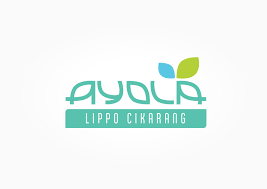

Sistem Informasi Manajemen Layanan & Inventaris Departemen IT
Kelola laporan masalah, permintaan layanan, dan tiket dukungan IT dari karyawan.
Data inventaris perangkat keras, kelola peminjaman, dan pantau status perangkat IT.
Catatan pribadi IT Supervisor untuk memantau tugas harian, jadwal maintenance, dan agenda.